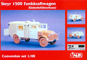

W/CMK Funkkraftwagen Conversion

Kit #32549 MSRP $34.00 $21.65 from Great Models Web Store
CMK Conversion Kit #8033 MSRP $34.95 $29.90 from Great Models Web Store
Images and text Copyright © 2008 by Matt Swan
Tamiya 1/48 Steyr Type 1500A/01
W/CMK Funkkraftwagen Conversion
Kit #32549
MSRP $34.00 $21.65 from Great Models Web Store
CMK Conversion Kit #8033
MSRP $34.95
$29.90 from Great Models Web Store
Images and text Copyright © 2008 by Matt Swan
Developmental Background
The 1500A series Steyr was produced in Austria between 1941 and 1945 and was used in several capacities by Axis forces. The primary vehicle version was produced as a large 4 wheel drive staff car but the basic chassis system had several different body styles bolted to it. The most commonly found types were the 6 person command car, the eight person infantry carrier and the light cargo truck. These were not the only version produced however, the light truck version was also used as an ambulance and a field radio vehicle with specialty boxes placed on the aft chassis. Early in the production run the cabs were of all metal fabrication but as materials became scarce the light truck variants were switched over to the wooden ‘Ersatz’ cab. This was a fairly generic boxy cab that was placed on many different manufacture drive systems.
The Steyr utilized an air-cooled 3517cc eight cylinder engine and a four speed manual transmission. The front axel could be disengaged for high speed travel on finished roads. It was reported that in rear wheel drive mode on good roads the command car could reach speeds of 90 kph and off road in four-wheel drive mode could top out at 45 kph. The Steyr featured an independent from suspension and a rigid rear axel with semi-elliptic leaf springs. By time production ceased in 1944 approximately 12450 vehicles of all versions had rolled out of the Austrian factory and another 5600 were manufactured under license at Auto-Union's Wanderer factory at Sigmar and Audi at Zwickau in Germany. Today there are many surviving examples of these vehicles and it is not unusual to see them show up in the movies. Most recently a Steyr 1500 Infantry carrier showed up in the 2001 production of “All the Queens Men” and a light truck 1500 in the made for TV 2001 movie “Uprising”.
The Kit
1/48 scale kits have been experiencing growing popularity over the last few years with both Tamiya and Hasegawa producing an interesting variety of the most commonly seen types and the introduction of the Steyr 1500 command car in 2007 was a welcome addition. Like most of the Tamiya 1/48 scale vehicle and armor kits this one includes a cast metal chassis with lower engine detail molded in place which does give the kit a nice weight but does little for the general construction. Attaching to this metal chassis is a fine selection of plastic detail such as front and rear axels and exhaust system with all the upper sub-assemblies being fixed with two small screws.
As could be expected with any current Tamiya release the overall parts quality and fit is exceptional. There is no flash or sink marks on any of the parts and mold separation lines are minimal. Included with this version of the kit is a single seated driver figure that consists of five body parts, when assembled he has his arms folded across his chest and some modification is required if you want him holding the wheel. The kit consists of seventy two light tan injection molded pieces, a single clear part for the front windshield with wipers molded in place and the solid little metal chassis for a total of seventy fours pieces in the box.
You may click on these small images to view larger pictures
The Conversion Package

CMK offers three different conversion packages for use with the Tamiya kit which allows the modeler to make some interesting secondary builds however will result in more than half of the donor kit being discarded. The Funkkraftwagen (Field Radio Truck) conversion replaces the driver’s position aft with all new resin construction. While not a cheap conversion package you definitely get what you pay for, the resin quality is very good with virtually no flash, minimal pour stubs and no warped parts.
There is some light flashing over all the windows but this is easily removed with a razor knife. Most of the primary parts can be removed from the pour stubs simply by scoring the joint with a knife tip and snapping them off. The kit includes a photo etched fret and a styrene printed sheet for the various window panes. All resin parts fit together very well. The kit instruction booklet is very comprehensive and is a real aid to construction. They only shortfall of the conversion kit is no acetate instruments for the PE dashboard.
Construction
I had not planned on building this conversion right away but the Evil Modeling Elf would simply not let me rest. I began construction with about four hours of resin parts clean-up. Most parts were removed from the pour stubs simply by scoring the line with a razor knife and snapping them off while others were removed with a JLC Razor Saw. Once all parts were cleaned up they were washed with warm soapy water. While they dried I painted the chassis pieces and assembled them. When I was cleaning up the resin I was considering my plan of attack and had decided the best approach would be to break this down into three distinct sub-assemblies; the chassis, the cargo box and the cab. I would weather the wheels and tires separately and attach them last to the chassis after all other weathering had been completed there. The conversion clear parts were designed to lay over the insides of the window openings which I did not like so that would get changed in the end. I had decided it would be best to leave the clear parts out until the very end so this necessitated leaving the cab and cargo roofs un attached until the end.
Basic construction went perfectly according to the printed directions. All interior areas were painted with either RLM-02 or light sand. All exterior surfaces were done with Panzer Dark Gray. The chassis was weathered first with Rust-all then with sludge wash and some silver dry brushing. The tires were weathered with a sludge wash followed by ground pastel chalks then the upper surfaces were wiped with my fingertip. The driver had his arms heavily modified to hold the wheel and gear shift. Some Mr. Surfacer 500 was needed to fill some gaps around his shoulders but in the end he was successfully repositioned. Once basic construction and painting of the cab and cargo box were completed these were sealed with Future before final weathering took place then a seal coat of Micro Flat was applied. In these following images we can see the three sub-assemblies prior to having the clear parts installed. The map on the wall of the cargo box was something I printed off on white decal paper. At this point I have about fifteen hours tied up in this build and one more good session should wrap it up. I had considered putting some scratch built radio equipment inside the box but with the roof in place you really can’t see anything else, you can barely see the map through the open door. In the third image the pieces are just resting on the chassis.

You may click on these small images to view larger pictures
I addressed the instrument problem of not having any faces or backing by placing the PE panel over a strip of thin white styrene sheet then lightly airbrushing some Panzer Dark Gray over it. Once the PE part was moved I had perfect instrument placement markings and part outline. I then punched a few instrument faces from a Mike Grant sheet of instruments, placed them over the dark gray markings and let dry. Next the piece was cut from the sheet and afixed to the back of the PE part with some Future. Now the completed instrument panel could be placed inside the cab.
1/01/2009
The kit clear panels for the windows are supposed to be cut slightly large and laid over the openings from the interior. Right from the beginning I did not like this idea but thought I would try it on at least one window to be certain. I cut the small round window for the back of the cab and installed it per the directions and found my earlier suspicions confirmed – I did not like it. With all the rest of the window panels I cut them right on the printed line then test fit them. Each one needed to be trimmed just a little to place inside each opening. I ran a small bead of clear parts cement around the inside of each opening then placed the panel and adjusted it with the tip of my tweezers. By having not placed any of the roof pieces earlier this task was very easy to accomplish.
I added a couple of junction boxes to the left side of the cargo bay and added antenna made from stretched sprue. The roof pieces could now be glued in place and the primary sub-assemblies glued into a single whole. The final details were a couple of cab access steps made from magnet wire and bent on my hold-n-fold (what a great tool). Final pictures were taken on a basic diorama board made with model railroad flock and placed in front of a background panel purchased from Scenic Express. The firgues used in the shoot are from several sources; the guys on the bike and the walking soldier are from a Bandai kit, the officer is from a Preiser figure set and the guy packing bags is from an old Monogram kit.

You may click on these small images to view larger pictures
Conclusions
I would have enjoyed building the Tamiya Steyr kit right out of the box and found it useful for airfield diorama purposes but the addition of the CMK set makes for something really different. Both kits feature well made parts, good directions and great fit. I remember back in the day when just about the only thing you could find in 1/48 armor was from Bandai. Man, those guys were definitely ahead of their time. Today I think we are really coming into the golden age of 1/48 scale armor and support models. This kit and conversion demonstrate some of the exceptional quality and engineering to be found in modern offerings. I give this kit and the CMK conversion an excellent recommendation.


{kind=link}
{kind=link}
{kind=link}
{kind=link}
{kind=link}
{kind=link}
{kind=link}
{kind=link}
{kind=link}
{kind=link}
{kind=link}
{kind=link}